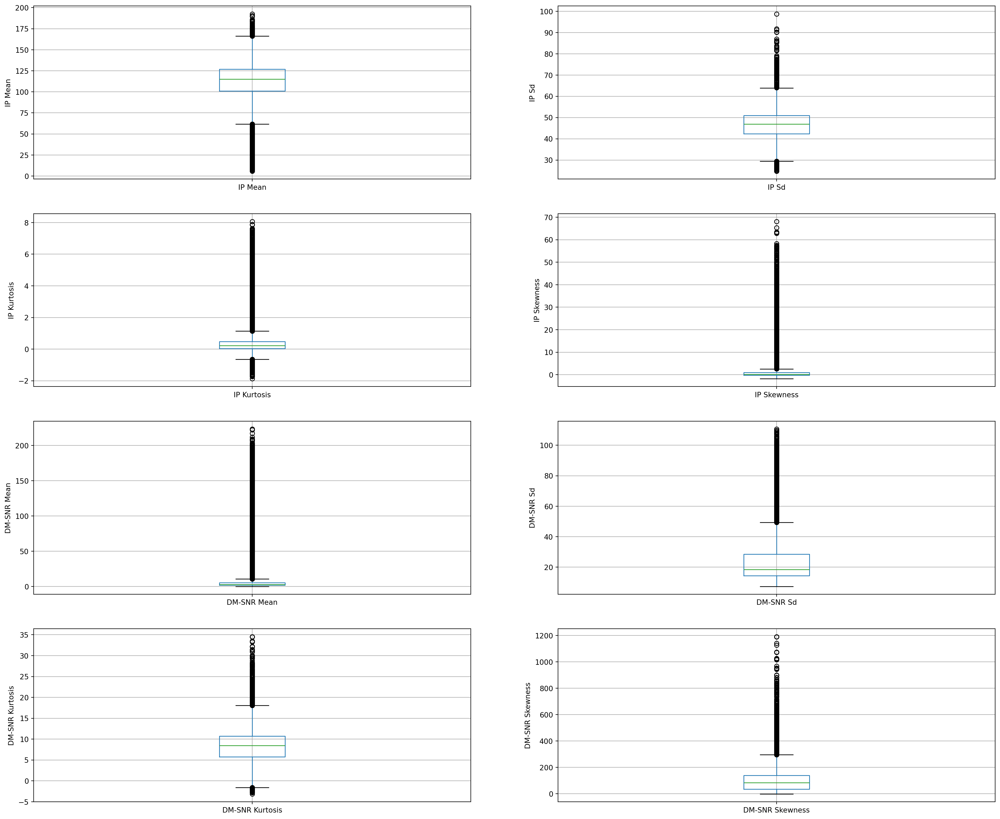
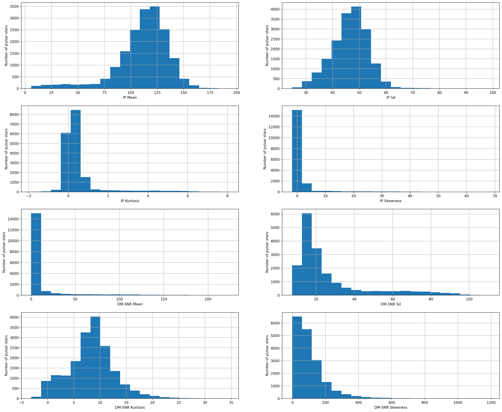
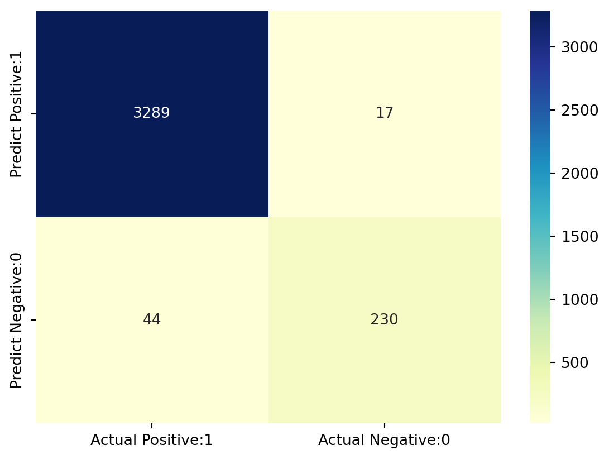
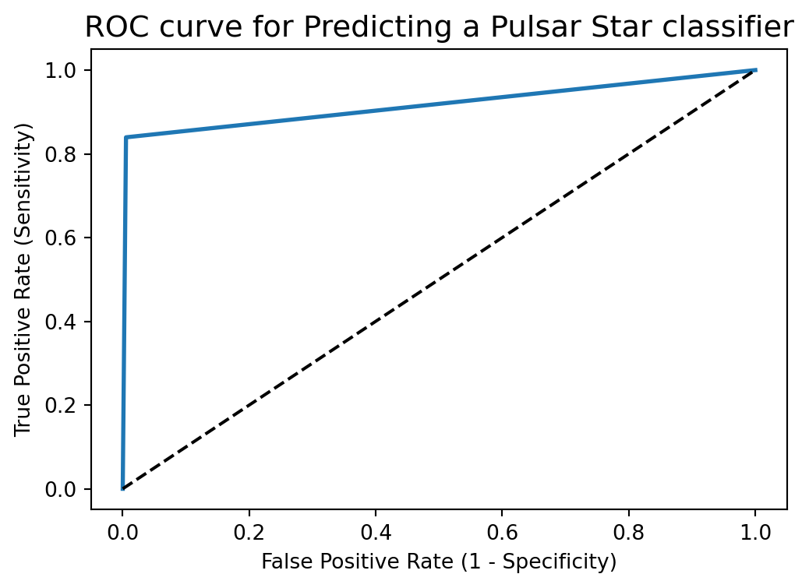

# Checking/Setting Working Directory
import os
os.getcwd()'C:\\Users\\mshar\\OneDrive - Southern Illinois University\\BSAN405_MLINBUSINESS_WEBSITE'Support Vector Machines (SVMs in short) are machine learning algorithms that are used for classification and regression purposes. SVMs are one of the powerful machine learning algorithms for classification, regression and outlier detection purposes. An SVM classifier builds a model that assigns new data points to one of the given categories. Thus, it can be viewed as a non-probabilistic binary linear classifier.
The original SVM algorithm was developed by Vladimir N Vapnik and Alexey Ya. Chervonenkis in 1963. At that time, the algorithm was in early stages. The only possibility is to draw hyperplanes for linear classifier. In 1992, Bernhard E. Boser, Isabelle M Guyon and Vladimir N Vapnik suggested a way to create non-linear classifiers by applying the kernel trick to maximum-margin hyperplanes. The current standard was proposed by Corinna Cortes and Vapnik in 1993 and published in 1995.
SVMs can be used for linear classification purposes. In addition to performing linear classification, SVMs can efficiently perform a non-linear classification using the kernel trick. It enable us to implicitly map the inputs into high dimensional feature spaces.
Now, we should be familiar with some SVM terminology.
A hyperplane is a decision boundary which separates between given set of data points having different class labels. The SVM classifier separates data points using a hyperplane with the maximum amount of margin. This hyperplane is known as the maximum margin hyperplane and the linear classifier it defines is known as the maximum margin classifier.
Support vectors are the sample data points, which are closest to the hyperplane. These data points will define the separating line or hyperplane better by calculating margins.
A margin is a separation gap between the two lines on the closest data points. It is calculated as the perpendicular distance from the line to support vectors or closest data points. In SVMs, we try to maximize this separation gap so that we get maximum margin.
The following diagram illustrates these concepts visually.

In SVMs, our main objective is to select a hyperplane with the maximum possible margin between support vectors in the given dataset. SVM searches for the maximum margin hyperplane in the following 2 step process –
Generate hyperplanes which segregates the classes in the best possible way. There are many hyperplanes that might classify the data. We should look for the best hyperplane that represents the largest separation, or margin, between the two classes.
So, we choose the hyperplane so that distance from it to the support vectors on each side is maximized. If such a hyperplane exists, it is known as the maximum margin hyperplane and the linear classifier it defines is known as a maximum margin classifier.
The following diagram illustrates the concept of maximum margin and maximum margin hyperplane in a clear manner.

Sometimes, the sample data points are so dispersed that it is not possible to separate them using a linear hyperplane. In such a situation, SVMs use a kernel trick to transform the input space to a higher dimensional space as shown in the diagram below. It uses a mapping function to transform the 2-D input space into the 3-D input space. Now, we can easily segregate the data points using linear separation.

Another Example of the Kernel Trick -

In practice, SVM algorithm is implemented using a kernel. It uses a technique called the kernel trick. In simple words, a kernel is just a function that maps the data to a higher dimension where data is separable. A kernel transforms a low-dimensional input data space into a higher dimensional space. So, it converts non-linear separable problems to linear separable problems by adding more dimensions to it. Thus, the kernel trick helps us to build a more accurate classifier. Hence, it is useful in non-linear separation problems.
We can define a kernel function as follows-

In the context of SVMs, there are 4 popular kernels – Linear kernel,Polynomial kernel,Radial Basis Function (RBF) kernel (also called Gaussian kernel) and Sigmoid kernel. These are described below -
In linear kernel, the kernel function takes the form of a linear function as follows-
linear kernel : K(xi , xj ) = xiT xj
Linear kernel is used when the data is linearly separable. It means that data can be separated using a single line. It is one of the most common kernels to be used. It is mostly used when there are large number of features in a dataset. Linear kernel is often used for text classification purposes.
Training with a linear kernel is usually faster, because we only need to optimize the C regularization parameter. When training with other kernels, we also need to optimize the γ parameter. So, performing a grid search will usually take more time.
Linear kernel can be visualized with the following figure.

Polynomial kernel represents the similarity of vectors (training samples) in a feature space over polynomials of the original variables. The polynomial kernel looks not only at the given features of input samples to determine their similarity, but also combinations of the input samples.
For degree-d polynomials, the polynomial kernel is defined as follows –
Polynomial kernel : K(xi , xj ) = (γxiT xj + r)d , γ > 0
Polynomial kernel is very popular in Natural Language Processing. The most common degree is d = 2 (quadratic), since larger degrees tend to overfit on NLP problems. It can be visualized with the following diagram.

Radial basis function kernel is a general purpose kernel. It is used when we have no prior knowledge about the data. The RBF kernel on two samples x and y is defined by the following equation –
![]()
The following diagram demonstrates the SVM classification with rbf kernel.

Sigmoid kernel has its origin in neural networks. We can use it as the proxy for neural networks. Sigmoid kernel is given by the following equation –
sigmoid kernel : k (x, y) = tanh(αxTy + c)
Sigmoid kernel can be visualized with the following diagram-

Scikit-Learn provides useful libraries to implement Support Vector Machine algorithm on a dataset. There are many libraries that can help us to implement SVM smoothly. We just need to call the library with parameters that suit to our needs. In this project, we are dealing with a classification task. So, we will mention the Scikit-Learn libraries for SVM classification purposes.
First, there is a LinearSVC() classifier. As the name suggests, this classifier uses only linear kernel. In LinearSVC() classifier, we don’t pass the value of kernel since it is used only for linear classification purposes.
Scikit-Learn provides two other classifiers - SVC() and NuSVC() which are used for classification purposes. These classifiers are mostly similar with some difference in parameters. NuSVC() is similar to SVC() but uses a parameter to control the number of support vectors. We pass the values of kernel, gamma and C along with other parameters. By default kernel parameter uses rbf as its default value but we can pass values like poly, linear, sigmoid or callable function.
We have used the Predicting a Pulsar Star dataset for this project.
Pulsars are a rare type of Neutron star that produce radio emission detectable here on Earth. They are of considerable scientific interest as probes of space-time, the inter-stellar medium, and states of matter. Classification algorithms in particular are being adopted, which treat the data sets as binary classification problems. Here the legitimate pulsar examples form minority positive class and spurious examples form the majority negative class.
The data set shared here contains 16,259 spurious examples caused by RFI/noise, and 1,639 real pulsar examples. Each row lists the variables first, and the class label is the final entry. The class labels used are 0 (negative) and 1 (positive).
Each candidate is described by 8 continuous variables, and a single class variable. The first four are simple statistics obtained from the integrated pulse profile. The remaining four variables are similarly obtained from the DM-SNR curve . These are summarized below:
Mean of the integrated profile.
Standard deviation of the integrated profile.
Excess kurtosis of the integrated profile.
Skewness of the integrated profile.
Mean of the DM-SNR curve.
Standard deviation of the DM-SNR curve.
Excess kurtosis of the DM-SNR curve.
Skewness of the DM-SNR curve.
Class
We will start off by importing the required Python libraries.
# Checking/Setting Working Directory
import os
os.getcwd()'C:\\Users\\mshar\\OneDrive - Southern Illinois University\\BSAN405_MLINBUSINESS_WEBSITE'# This Python 3 environment comes with many helpful analytics libraries installed
# It is defined by the kaggle/python docker image: https://github.com/kaggle/docker-python
# For example, here's several helpful packages to load in
import numpy as np # linear algebra
import pandas as pd # data processing, CSV file I/O (e.g. pd.read_csv)
import matplotlib.pyplot as plt # for data visualization
import seaborn as sns # for statistical data visualization# To ignore warnings
import warnings
warnings.filterwarnings('ignore')# Importing Dataset
data = 'https://raw.githubusercontent.com/alexandrehsd/Predicting-Pulsar-Stars/master/pulsar_stars.csv'
df = pd.read_csv(data)Now, we will explore the data to gain insights about the data.
# view dimensions of dataset
df.shape
df.info()<class 'pandas.core.frame.DataFrame'>
RangeIndex: 17898 entries, 0 to 17897
Data columns (total 9 columns):
# Column Non-Null Count Dtype
--- ------ -------------- -----
0 Mean of the integrated profile 17898 non-null float64
1 Standard deviation of the integrated profile 17898 non-null float64
2 Excess kurtosis of the integrated profile 17898 non-null float64
3 Skewness of the integrated profile 17898 non-null float64
4 Mean of the DM-SNR curve 17898 non-null float64
5 Standard deviation of the DM-SNR curve 17898 non-null float64
6 Excess kurtosis of the DM-SNR curve 17898 non-null float64
7 Skewness of the DM-SNR curve 17898 non-null float64
8 target_class 17898 non-null int64
dtypes: float64(8), int64(1)
memory usage: 1.2 MBWe can see that there are 17,898 instances and 9 variables in the data set.
# let's preview the dataset
df.head()| Mean of the integrated profile | Standard deviation of the integrated profile | Excess kurtosis of the integrated profile | Skewness of the integrated profile | Mean of the DM-SNR curve | Standard deviation of the DM-SNR curve | Excess kurtosis of the DM-SNR curve | Skewness of the DM-SNR curve | target_class | |
|---|---|---|---|---|---|---|---|---|---|
| 0 | 140.562500 | 55.683782 | -0.234571 | -0.699648 | 3.199833 | 19.110426 | 7.975532 | 74.242225 | 0 |
| 1 | 102.507812 | 58.882430 | 0.465318 | -0.515088 | 1.677258 | 14.860146 | 10.576487 | 127.393580 | 0 |
| 2 | 103.015625 | 39.341649 | 0.323328 | 1.051164 | 3.121237 | 21.744669 | 7.735822 | 63.171909 | 0 |
| 3 | 136.750000 | 57.178449 | -0.068415 | -0.636238 | 3.642977 | 20.959280 | 6.896499 | 53.593661 | 0 |
| 4 | 88.726562 | 40.672225 | 0.600866 | 1.123492 | 1.178930 | 11.468720 | 14.269573 | 252.567306 | 0 |
We can see that there are 9 variables in the dataset. 8 are continuous variables and 1 is discrete variable. The discrete variable is target_class variable. It is also the target variable.
Now, we will view the column names to check for leading and trailing spaces.
# view the column names of the dataframe
col_names = df.columns
col_namesIndex([' Mean of the integrated profile',
' Standard deviation of the integrated profile',
' Excess kurtosis of the integrated profile',
' Skewness of the integrated profile', ' Mean of the DM-SNR curve',
' Standard deviation of the DM-SNR curve',
' Excess kurtosis of the DM-SNR curve', ' Skewness of the DM-SNR curve',
'target_class'],
dtype='object')We can see that there are leading spaces (spaces at the start of the string name) in the dataframe. So, I will remove these leading spaces.
# remove leading spaces from column names
df.columns = df.columns.str.strip()I have removed the leading spaces from the column names. Let’s again view the column names to confirm the same.
# view column names again
df.columnsIndex(['Mean of the integrated profile',
'Standard deviation of the integrated profile',
'Excess kurtosis of the integrated profile',
'Skewness of the integrated profile', 'Mean of the DM-SNR curve',
'Standard deviation of the DM-SNR curve',
'Excess kurtosis of the DM-SNR curve', 'Skewness of the DM-SNR curve',
'target_class'],
dtype='object')We can see that the leading spaces are removed from the column name. But the column names are very long. So, I will make them short by renaming them.
# rename column names
df.columns = ['IP Mean', 'IP Sd', 'IP Kurtosis', 'IP Skewness',
'DM-SNR Mean', 'DM-SNR Sd', 'DM-SNR Kurtosis', 'DM-SNR Skewness', 'target_class']# view the renamed column names
df.columnsIndex(['IP Mean', 'IP Sd', 'IP Kurtosis', 'IP Skewness', 'DM-SNR Mean',
'DM-SNR Sd', 'DM-SNR Kurtosis', 'DM-SNR Skewness', 'target_class'],
dtype='object')We can see that the column names are shortened. IP stands for integrated profile and DM-SNR stands for delta modulation and signal to noise ratio. Now, it is much more easy to work with the columns.
Our target variable is the target_class column. So, we will check its distribution.
# check distribution of target_class column
df['target_class'].value_counts()target_class
0 16259
1 1639
Name: count, dtype: int64# view the percentage distribution of target_class column
df['target_class'].value_counts()/(len(df))target_class
0 0.908426
1 0.091574
Name: count, dtype: float64We can see that percentage of observations of the class label 0 and 1 is 90.84% and 9.16%. So, this is a class imbalanced problem. I will deal with that in later section.
# view summary of dataset
df.info()<class 'pandas.core.frame.DataFrame'>
RangeIndex: 17898 entries, 0 to 17897
Data columns (total 9 columns):
# Column Non-Null Count Dtype
--- ------ -------------- -----
0 IP Mean 17898 non-null float64
1 IP Sd 17898 non-null float64
2 IP Kurtosis 17898 non-null float64
3 IP Skewness 17898 non-null float64
4 DM-SNR Mean 17898 non-null float64
5 DM-SNR Sd 17898 non-null float64
6 DM-SNR Kurtosis 17898 non-null float64
7 DM-SNR Skewness 17898 non-null float64
8 target_class 17898 non-null int64
dtypes: float64(8), int64(1)
memory usage: 1.2 MBWe can see that there are no missing values in the dataset and all the variables are numerical variables.
# check for missing values in variables
df.isnull().sum()IP Mean 0
IP Sd 0
IP Kurtosis 0
IP Skewness 0
DM-SNR Mean 0
DM-SNR Sd 0
DM-SNR Kurtosis 0
DM-SNR Skewness 0
target_class 0
dtype: int64We can see that there are no missing values in the dataset.
There are 9 numerical variables in the dataset.
8 are continuous variables and 1 is discrete variable.
The discrete variable is target_class variable. It is also the target variable.
There are no missing values in the dataset.
# view summary statistics in numerical variables
round(df.describe().transpose(),2)| count | mean | std | min | 25% | 50% | 75% | max | |
|---|---|---|---|---|---|---|---|---|
| IP Mean | 17898.0 | 111.08 | 25.65 | 5.81 | 100.93 | 115.08 | 127.09 | 192.62 |
| IP Sd | 17898.0 | 46.55 | 6.84 | 24.77 | 42.38 | 46.95 | 51.02 | 98.78 |
| IP Kurtosis | 17898.0 | 0.48 | 1.06 | -1.88 | 0.03 | 0.22 | 0.47 | 8.07 |
| IP Skewness | 17898.0 | 1.77 | 6.17 | -1.79 | -0.19 | 0.20 | 0.93 | 68.10 |
| DM-SNR Mean | 17898.0 | 12.61 | 29.47 | 0.21 | 1.92 | 2.80 | 5.46 | 223.39 |
| DM-SNR Sd | 17898.0 | 26.33 | 19.47 | 7.37 | 14.44 | 18.46 | 28.43 | 110.64 |
| DM-SNR Kurtosis | 17898.0 | 8.30 | 4.51 | -3.14 | 5.78 | 8.43 | 10.70 | 34.54 |
| DM-SNR Skewness | 17898.0 | 104.86 | 106.51 | -1.98 | 34.96 | 83.06 | 139.31 | 1191.00 |
| target_class | 17898.0 | 0.09 | 0.29 | 0.00 | 0.00 | 0.00 | 0.00 | 1.00 |
On closer inspection, we can suspect that all the continuous variables may contain outliers.
We will draw boxplots to visualise outliers in the above variables.
# draw boxplots to visualize outliers
plt.figure(figsize=(24,20))
plt.subplot(4, 2, 1)
fig = df.boxplot(column='IP Mean')
fig.set_title('')
fig.set_ylabel('IP Mean')
plt.subplot(4, 2, 2)
fig = df.boxplot(column='IP Sd')
fig.set_title('')
fig.set_ylabel('IP Sd')
plt.subplot(4, 2, 3)
fig = df.boxplot(column='IP Kurtosis')
fig.set_title('')
fig.set_ylabel('IP Kurtosis')
plt.subplot(4, 2, 4)
fig = df.boxplot(column='IP Skewness')
fig.set_title('')
fig.set_ylabel('IP Skewness')
plt.subplot(4, 2, 5)
fig = df.boxplot(column='DM-SNR Mean')
fig.set_title('')
fig.set_ylabel('DM-SNR Mean')
plt.subplot(4, 2, 6)
fig = df.boxplot(column='DM-SNR Sd')
fig.set_title('')
fig.set_ylabel('DM-SNR Sd')
plt.subplot(4, 2, 7)
fig = df.boxplot(column='DM-SNR Kurtosis')
fig.set_title('')
fig.set_ylabel('DM-SNR Kurtosis')
plt.subplot(4, 2, 8)
fig = df.boxplot(column='DM-SNR Skewness')
fig.set_title('')
fig.set_ylabel('DM-SNR Skewness')Text(0, 0.5, 'DM-SNR Skewness')
The above boxplots confirm that there are lot of outliers in these variables.
There are 2 variants of SVMs. They are hard-margin variant of SVM and soft-margin variant of SVM.
The hard-margin variant of SVM does not deal with outliers. In this case, we want to find the hyperplane with maximum margin such that every training point is correctly classified with margin at least 1. This technique does not handle outliers well.
Another version of SVM is called soft-margin variant of SVM. In this case, we can have a few points incorrectly classified or classified with a margin less than 1. But for every such point, we have to pay a penalty in the form of C parameter, which controls the outliers. Low C implies we are allowing more outliers and high C implies less outliers.
The message is that since the dataset contains outliers, so the value of C should be high while training the model.
Now, We will plot the histograms to check distributions to find out if they are normal or skewed.
# plot histogram to check distribution
plt.figure(figsize=(24,20))
plt.subplot(4, 2, 1)
fig = df['IP Mean'].hist(bins=20)
fig.set_xlabel('IP Mean')
fig.set_ylabel('Number of pulsar stars')
plt.subplot(4, 2, 2)
fig = df['IP Sd'].hist(bins=20)
fig.set_xlabel('IP Sd')
fig.set_ylabel('Number of pulsar stars')
plt.subplot(4, 2, 3)
fig = df['IP Kurtosis'].hist(bins=20)
fig.set_xlabel('IP Kurtosis')
fig.set_ylabel('Number of pulsar stars')
plt.subplot(4, 2, 4)
fig = df['IP Skewness'].hist(bins=20)
fig.set_xlabel('IP Skewness')
fig.set_ylabel('Number of pulsar stars')
plt.subplot(4, 2, 5)
fig = df['DM-SNR Mean'].hist(bins=20)
fig.set_xlabel('DM-SNR Mean')
fig.set_ylabel('Number of pulsar stars')
plt.subplot(4, 2, 6)
fig = df['DM-SNR Sd'].hist(bins=20)
fig.set_xlabel('DM-SNR Sd')
fig.set_ylabel('Number of pulsar stars')
plt.subplot(4, 2, 7)
fig = df['DM-SNR Kurtosis'].hist(bins=20)
fig.set_xlabel('DM-SNR Kurtosis')
fig.set_ylabel('Number of pulsar stars')
plt.subplot(4, 2, 8)
fig = df['DM-SNR Skewness'].hist(bins=20)
fig.set_xlabel('DM-SNR Skewness')
fig.set_ylabel('Number of pulsar stars')Text(0, 0.5, 'Number of pulsar stars')
We can see that all the 8 continuous variables are skewed.
X = df.drop(['target_class'], axis=1)
y = df['target_class']# split X and y into training and testing sets
from sklearn.model_selection import train_test_split
X_train, X_test, y_train, y_test = train_test_split(X, y, test_size = 0.2, random_state = 0)# check the shape of X_train and X_test
X_train.shape, X_test.shape((14318, 8), (3580, 8))cols = X.columnscolsIndex(['IP Mean', 'IP Sd', 'IP Kurtosis', 'IP Skewness', 'DM-SNR Mean',
'DM-SNR Sd', 'DM-SNR Kurtosis', 'DM-SNR Skewness'],
dtype='object')from sklearn.preprocessing import StandardScaler
scaler = StandardScaler()
X_train = scaler.fit_transform(X_train)
X_test = scaler.transform(X_test)X_train = pd.DataFrame(X_train, columns=[cols])X_test = pd.DataFrame(X_test, columns=[cols])X_train.describe()| IP Mean | IP Sd | IP Kurtosis | IP Skewness | DM-SNR Mean | DM-SNR Sd | DM-SNR Kurtosis | DM-SNR Skewness | |
|---|---|---|---|---|---|---|---|---|
| count | 1.431800e+04 | 1.431800e+04 | 1.431800e+04 | 1.431800e+04 | 1.431800e+04 | 1.431800e+04 | 1.431800e+04 | 1.431800e+04 |
| mean | 1.908113e-16 | -6.550610e-16 | 1.042143e-17 | 3.870815e-17 | -8.734147e-17 | -1.617802e-16 | -1.513588e-17 | 1.122785e-16 |
| std | 1.000035e+00 | 1.000035e+00 | 1.000035e+00 | 1.000035e+00 | 1.000035e+00 | 1.000035e+00 | 1.000035e+00 | 1.000035e+00 |
| min | -4.035499e+00 | -3.181033e+00 | -2.185946e+00 | -5.744051e-01 | -4.239001e-01 | -9.733707e-01 | -2.455649e+00 | -1.003411e+00 |
| 25% | -3.896291e-01 | -6.069473e-01 | -4.256221e-01 | -3.188054e-01 | -3.664918e-01 | -6.125457e-01 | -5.641035e-01 | -6.627590e-01 |
| 50% | 1.587461e-01 | 5.846646e-02 | -2.453172e-01 | -2.578142e-01 | -3.372294e-01 | -4.067482e-01 | 3.170446e-02 | -2.059136e-01 |
| 75% | 6.267059e-01 | 6.501017e-01 | -1.001238e-02 | -1.419621e-01 | -2.463724e-01 | 1.078934e-01 | 5.362759e-01 | 3.256217e-01 |
| max | 3.151882e+00 | 7.621116e+00 | 7.008906e+00 | 1.054430e+01 | 7.025568e+00 | 4.292181e+00 | 5.818557e+00 | 1.024613e+01 |
We now have X_train dataset ready to be fed into the SVM classifier. We will do it as follows.
Default hyperparameter means C=1.0, kernel=rbf and gamma=auto among other parameters.
# import SVC classifier
from sklearn.svm import SVC
# import metrics to compute accuracy
from sklearn.metrics import accuracy_score
# instantiate classifier with default hyperparameters
svc=SVC()
# fit classifier to training set
svc.fit(X_train,y_train)
# make predictions on test set
y_pred=svc.predict(X_test)
# compute and print accuracy score
print('Model accuracy score with default hyperparameters: {0:0.4f}'. format(accuracy_score(y_test, y_pred)))Model accuracy score with default hyperparameters: 0.9827We have seen that there are outliers in our dataset. So, we should increase the value of C as higher C means fewer outliers. So, we will run SVM with kernel=rbf and C=100.0.
# instantiate classifier with rbf kernel and C=100
svc=SVC(C=100.0)
# fit classifier to training set
svc.fit(X_train,y_train)
# make predictions on test set
y_pred=svc.predict(X_test)
# compute and print accuracy score
print('Model accuracy score with rbf kernel and C=100.0 : {0:0.4f}'. format(accuracy_score(y_test, y_pred)))Model accuracy score with rbf kernel and C=100.0 : 0.9832We can see that we obtain a higher accuracy with C=100.0 as higher C means less outliers.
Now, We will further increase the value of C=1000.0 and check accuracy.
# instantiate classifier with rbf kernel and C=1000
svc=SVC(C=1000.0)
# fit classifier to training set
svc.fit(X_train,y_train)
# make predictions on test set
y_pred=svc.predict(X_test)
# compute and print accuracy score
print('Model accuracy score with rbf kernel and C=1000.0 : {0:0.4f}'. format(accuracy_score(y_test, y_pred)))Model accuracy score with rbf kernel and C=1000.0 : 0.9816In this case, we can see that the accuracy had decreased with C=1000.0
# instantiate classifier with linear kernel and C=1.0
linear_svc=SVC(kernel='linear', C=1.0)
# fit classifier to training set
linear_svc.fit(X_train,y_train)
# make predictions on test set
y_pred_test=linear_svc.predict(X_test)
# compute and print accuracy score
print('Model accuracy score with linear kernel and C=1.0 : {0:0.4f}'. format(accuracy_score(y_test, y_pred_test)))Model accuracy score with linear kernel and C=1.0 : 0.9830# instantiate classifier with linear kernel and C=100.0
linear_svc100=SVC(kernel='linear', C=100.0)
# fit classifier to training set
linear_svc100.fit(X_train, y_train)
# make predictions on test set
y_pred=linear_svc100.predict(X_test)
# compute and print accuracy score
print('Model accuracy score with linear kernel and C=100.0 : {0:0.4f}'. format(accuracy_score(y_test, y_pred)))Model accuracy score with linear kernel and C=100.0 : 0.9832# instantiate classifier with linear kernel and C=1000.0
linear_svc1000=SVC(kernel='linear', C=1000.0)
# fit classifier to training set
linear_svc1000.fit(X_train, y_train)
# make predictions on test set
y_pred=linear_svc1000.predict(X_test)
# compute and print accuracy score
print('Model accuracy score with linear kernel and C=1000.0 : {0:0.4f}'. format(accuracy_score(y_test, y_pred)))Model accuracy score with linear kernel and C=1000.0 : 0.9832We can see that we can obtain higher accuracy with C=100.0 and C=1000.0 as compared to C=1.0.
Here, y_test are the true class labels and y_pred are the predicted class labels in the test-set.
Now, I will compare the train-set and test-set accuracy to check for overfitting.
y_pred_train = linear_svc.predict(X_train)
y_pred_trainarray([0, 0, 1, ..., 0, 0, 0], shape=(14318,))print('Training-set accuracy score: {0:0.4f}'. format(accuracy_score(y_train, y_pred_train)))Training-set accuracy score: 0.9783We can see that the training set and test-set accuracy are very much comparable.
# print the scores on training and test set
print('Training set score: {:.4f}'.format(linear_svc.score(X_train, y_train)))
print('Test set score: {:.4f}'.format(linear_svc.score(X_test, y_test)))Training set score: 0.9783
Test set score: 0.9830The training-set accuracy score is 0.9783 while the test-set accuracy to be 0.9830. These two values are quite comparable. So, there is no question of overfitting.
So, the model accuracy is 0.9832. But, we cannot say that our model is very good based on the above accuracy. We must compare it with the null accuracy. Null accuracy is the accuracy that could be achieved by always predicting the most frequent class.
So, we should first check the class distribution in the test set.
# check class distribution in test set
y_test.value_counts()target_class
0 3306
1 274
Name: count, dtype: int64We can see that the occurences of most frequent class 0 is 3306. So, we can calculate null accuracy by dividing 3306 by total number of occurences.
# check null accuracy score
null_accuracy = (3306/(3306+274))
print('Null accuracy score: {0:0.4f}'. format(null_accuracy))Null accuracy score: 0.9235We can see that our model accuracy score is 0.9830 but null accuracy score is 0.9235. So, we can conclude that our SVM classifier is doing a very good job in predicting the class labels.
# instantiate classifier with polynomial kernel and C=1.0
poly_svc=SVC(kernel='poly', C=1.0)
# fit classifier to training set
poly_svc.fit(X_train,y_train)
# make predictions on test set
y_pred=poly_svc.predict(X_test)
# compute and print accuracy score
print('Model accuracy score with polynomial kernel and C=1.0 : {0:0.4f}'. format(accuracy_score(y_test, y_pred)))Model accuracy score with polynomial kernel and C=1.0 : 0.9807### Run SVM with polynomial kernel and C=100.0
# instantiate classifier with polynomial kernel and C=100.0
poly_svc100=SVC(kernel='poly', C=100.0)
# fit classifier to training set
poly_svc100.fit(X_train, y_train)
# make predictions on test set
y_pred=poly_svc100.predict(X_test)
# compute and print accuracy score
print('Model accuracy score with polynomial kernel and C=1.0 : {0:0.4f}'. format(accuracy_score(y_test, y_pred)))Model accuracy score with polynomial kernel and C=1.0 : 0.9824Polynomial kernel gives poor performance. It may be overfitting the training set.
# instantiate classifier with sigmoid kernel and C=1.0
sigmoid_svc=SVC(kernel='sigmoid', C=1.0)
# fit classifier to training set
sigmoid_svc.fit(X_train,y_train)
# make predictions on test set
y_pred=sigmoid_svc.predict(X_test)
# compute and print accuracy score
print('Model accuracy score with sigmoid kernel and C=1.0 : {0:0.4f}'. format(accuracy_score(y_test, y_pred)))Model accuracy score with sigmoid kernel and C=1.0 : 0.8858# instantiate classifier with sigmoid kernel and C=100.0
sigmoid_svc100=SVC(kernel='sigmoid', C=100.0)
# fit classifier to training set
sigmoid_svc100.fit(X_train,y_train)
# make predictions on test set
y_pred=sigmoid_svc100.predict(X_test)
# compute and print accuracy score
print('Model accuracy score with sigmoid kernel and C=100.0 : {0:0.4f}'. format(accuracy_score(y_test, y_pred)))Model accuracy score with sigmoid kernel and C=100.0 : 0.8855We can see that sigmoid kernel is also performing poorly just like with polynomial kernel.
A confusion matrix is a tool for summarizing the performance of a classification algorithm. A confusion matrix will give us a clear picture of classification model performance and the types of errors produced by the model. It gives us a summary of correct and incorrect predictions broken down by each category. The summary is represented in a tabular form.
Four types of outcomes are possible while evaluating a classification model performance. These four outcomes are described below:-
True Positives (TP) – True Positives occur when we predict an observation belongs to a certain class and the observation actually belongs to that class.
True Negatives (TN) – True Negatives occur when we predict an observation does not belong to a certain class and the observation actually does not belong to that class.
False Positives (FP) – False Positives occur when we predict an observation belongs to a certain class but the observation actually does not belong to that class. This type of error is called Type I error.
False Negatives (FN) – False Negatives occur when we predict an observation does not belong to a certain class but the observation actually belongs to that class. This is a very serious error and it is called Type II error.
These four outcomes are summarized in a confusion matrix given below.
# Print the Confusion Matrix and slice it into four pieces
from sklearn.metrics import confusion_matrix
cm = confusion_matrix(y_test, y_pred_test)
print('Confusion matrix\n\n', cm)
print('\nTrue Positives(TP) = ', cm[0,0])
print('\nTrue Negatives(TN) = ', cm[1,1])
print('\nFalse Positives(FP) = ', cm[0,1])
print('\nFalse Negatives(FN) = ', cm[1,0])Confusion matrix
[[3289 17]
[ 44 230]]
True Positives(TP) = 3289
True Negatives(TN) = 230
False Positives(FP) = 17
False Negatives(FN) = 44The confusion matrix shows 3289 + 230 = 3519 correct predictions and 17 + 44 = 61 incorrect predictions.
In this case, we have
True Positives (Actual Positive:1 and Predict Positive:1) - 3289
True Negatives (Actual Negative:0 and Predict Negative:0) - 230
False Positives (Actual Negative:0 but Predict Positive:1) - 17 (Type I error)
False Negatives (Actual Positive:1 but Predict Negative:0) - 44 (Type II error)
# visualize confusion matrix with seaborn heatmap
cm_matrix = pd.DataFrame(data=cm, columns=['Actual Positive:1', 'Actual Negative:0'],
index=['Predict Positive:1', 'Predict Negative:0'])
sns.heatmap(cm_matrix, annot=True, fmt='d', cmap='YlGnBu')
Classification report is another way to evaluate the classification model performance. It displays the precision, recall, f1 and support scores for the model. We have described these terms in later.
We can print a classification report as follows:-
from sklearn.metrics import classification_report
print(classification_report(y_test, y_pred_test)) precision recall f1-score support
0 0.99 0.99 0.99 3306
1 0.93 0.84 0.88 274
accuracy 0.98 3580
macro avg 0.96 0.92 0.94 3580
weighted avg 0.98 0.98 0.98 3580
TP = cm[0,0]
TN = cm[1,1]
FP = cm[0,1]
FN = cm[1,0]# print classification accuracy
classification_accuracy = (TP + TN) / float(TP + TN + FP + FN)
print('Classification accuracy : {0:0.4f}'.format(classification_accuracy))Classification accuracy : 0.9830# print classification error
classification_error = (FP + FN) / float(TP + TN + FP + FN)
print('Classification error : {0:0.4f}'.format(classification_error))Classification error : 0.0170Precision can be defined as the percentage of correctly predicted positive outcomes out of all the predicted positive outcomes. It can be given as the ratio of true positives (TP) to the sum of true and false positives (TP + FP).
So, Precision identifies the proportion of correctly predicted positive outcome. It is more concerned with the positive class than the negative class.
Mathematically, precision can be defined as the ratio of TP to (TP + FP).
# print precision score
precision = TP / float(TP + FP)
print('Precision : {0:0.4f}'.format(precision))Precision : 0.9949Recall can be defined as the percentage of correctly predicted positive outcomes out of all the actual positive outcomes. It can be given as the ratio of true positives (TP) to the sum of true positives and false negatives (TP + FN). Recall is also called Sensitivity.
Recall identifies the proportion of correctly predicted actual positives.
Mathematically, recall can be defined as the ratio of TP to (TP + FN).
recall = TP / float(TP + FN)
print('Recall or Sensitivity : {0:0.4f}'.format(recall))Recall or Sensitivity : 0.9868True Positive Rate is synonymous with Recall.
true_positive_rate = TP / float(TP + FN)
print('True Positive Rate : {0:0.4f}'.format(true_positive_rate))True Positive Rate : 0.9868false_positive_rate = FP / float(FP + TN)
print('False Positive Rate : {0:0.4f}'.format(false_positive_rate))False Positive Rate : 0.0688specificity = TN / (TN + FP)
print('Specificity : {0:0.4f}'.format(specificity))Specificity : 0.9312f1-score is the weighted harmonic mean of precision and recall. The best possible f1-score would be 1.0 and the worst would be 0.0. f1-score is the harmonic mean of precision and recall. So, f1-score is always lower than accuracy measures as they embed precision and recall into their computation. The weighted average of f1-score should be used to compare classifier models, not global accuracy.
Support is the actual number of occurrences of the class in our dataset.
Another tool to measure the classification model performance visually is ROC Curve. ROC Curve stands for Receiver Operating Characteristic Curve. An ROC Curve is a plot which shows the performance of a classification model at various classification threshold levels.
The ROC Curve plots the True Positive Rate (TPR) against the False Positive Rate (FPR) at various threshold levels.
True Positive Rate (TPR) is also called Recall. It is defined as the ratio of TP to (TP + FN).
False Positive Rate (FPR) is defined as the ratio of FP to (FP + TN).
In the ROC Curve, we will focus on the TPR (True Positive Rate) and FPR (False Positive Rate) of a single point. This will give us the general performance of the ROC curve which consists of the TPR and FPR at various threshold levels. So, an ROC Curve plots TPR vs FPR at different classification threshold levels. If we lower the threshold levels, it may result in more items being classified as positve. It will increase both True Positives (TP) and False Positives (FP).
# plot ROC Curve
from sklearn.metrics import roc_curve
fpr, tpr, thresholds = roc_curve(y_test, y_pred_test)
plt.figure(figsize=(6,4))
plt.plot(fpr, tpr, linewidth=2)
plt.plot([0,1], [0,1], 'k--' )
plt.rcParams['font.size'] = 12
plt.title('ROC curve for Predicting a Pulsar Star classifier')
plt.xlabel('False Positive Rate (1 - Specificity)')
plt.ylabel('True Positive Rate (Sensitivity)')
plt.show()
ROC curve help us to choose a threshold level that balances sensitivity and specificity for a particular context.
ROC AUC stands for Receiver Operating Characteristic - Area Under Curve. It is a technique to compare classifier performance. In this technique, we measure the area under the curve (AUC). A perfect classifier will have a ROC AUC equal to 1, whereas a purely random classifier will have a ROC AUC equal to 0.5.
So, ROC AUC is the percentage of the ROC plot that is underneath the curve.
# compute ROC AUC
from sklearn.metrics import roc_auc_score
ROC_AUC = roc_auc_score(y_test, y_pred_test)
print('ROC AUC : {:.4f}'.format(ROC_AUC))ROC AUC : 0.9171ROC AUC is a single number summary of classifier performance. The higher the value, the better the classifier.
ROC AUC of our model approaches towards 1. So, we can conclude that our classifier does a good job in classifying the pulsar star.
# calculate cross-validated ROC AUC
from sklearn.model_selection import cross_val_score
Cross_validated_ROC_AUC = cross_val_score(linear_svc, X_train, y_train, cv=10, scoring='roc_auc').mean()
print('Cross validated ROC AUC : {:.4f}'.format(Cross_validated_ROC_AUC))Cross validated ROC AUC : 0.9756k-fold cross-validation is a very useful technique to evaluate model performance. But, it fails here because we have a imbalanced dataset. So, in the case of imbalanced dataset, I will use another technique to evaluate model performance. It is called stratified k-fold cross-validation.
In stratified k-fold cross-validation, we split the data such that the proportions between classes are the same in each fold as they are in the whole dataset.
Moreover, I will shuffle the data before splitting because shuffling yields much better result.
from sklearn.model_selection import KFold
kfold=KFold(n_splits=5, shuffle=True, random_state=0)
linear_svc=SVC(kernel='linear')
linear_scores = cross_val_score(linear_svc, X, y, cv=kfold)# print cross-validation scores with linear kernel
print('Stratified cross-validation scores with linear kernel:{}'.format(linear_scores))Stratified cross-validation scores with linear kernel:[0.98296089 0.97458101 0.97988827 0.97876502 0.97848561]# print average cross-validation score with linear kernel
print('Average stratified cross-validation score with linear kernel:{:.4f}'.format(linear_scores.mean()))Average stratified cross-validation score with linear kernel:0.9789rbf_svc=SVC(kernel='rbf')
rbf_scores = cross_val_score(rbf_svc, X, y, cv=kfold)# print cross-validation scores with rbf kernel
print('Stratified Cross-validation scores with rbf kernel:{}'.format(rbf_scores))Stratified Cross-validation scores with rbf kernel:[0.97849162 0.97011173 0.97318436 0.9709416 0.96982397]# print average cross-validation score with rbf kernel
print('Average stratified cross-validation score with rbf kernel:{:.4f}'.format(rbf_scores.mean()))Average stratified cross-validation score with rbf kernel:0.9725I obtain higher average stratified k-fold cross-validation score of 0.9789 with linear kernel but the model accuracy is 0.9832. So, stratified cross-validation technique does not help to improve the model performance.
# import GridSearchCV
from sklearn.model_selection import GridSearchCV
# import SVC classifier
from sklearn.svm import SVC
# instantiate classifier with default hyperparameters with kernel=rbf, C=1.0 and gamma=auto
svc=SVC()
# declare parameters for hyperparameter tuning
parameters = [ {'C':[1, 10, 100, 1000], 'kernel':['linear']},
{'C':[1, 10, 100, 1000], 'kernel':['rbf'], 'gamma':[0.1, 0.2, 0.3, 0.4, 0.5, 0.6, 0.7, 0.8, 0.9]},
{'C':[1, 10, 100, 1000], 'kernel':['poly'], 'degree': [2,3,4] ,'gamma':[0.01,0.02,0.03,0.04,0.05]}
]
grid_search = GridSearchCV(estimator = svc,
param_grid = parameters,
scoring = 'accuracy',
cv = 5,
verbose=0)
grid_search.fit(X_train, y_train)GridSearchCV(cv=5, estimator=SVC(),
param_grid=[{'C': [1, 10, 100, 1000], 'kernel': ['linear']},
{'C': [1, 10, 100, 1000],
'gamma': [0.1, 0.2, 0.3, 0.4, 0.5, 0.6, 0.7, 0.8,
0.9],
'kernel': ['rbf']},
{'C': [1, 10, 100, 1000], 'degree': [2, 3, 4],
'gamma': [0.01, 0.02, 0.03, 0.04, 0.05],
'kernel': ['poly']}],
scoring='accuracy')In a Jupyter environment, please rerun this cell to show the HTML representation or trust the notebook. GridSearchCV(cv=5, estimator=SVC(),
param_grid=[{'C': [1, 10, 100, 1000], 'kernel': ['linear']},
{'C': [1, 10, 100, 1000],
'gamma': [0.1, 0.2, 0.3, 0.4, 0.5, 0.6, 0.7, 0.8,
0.9],
'kernel': ['rbf']},
{'C': [1, 10, 100, 1000], 'degree': [2, 3, 4],
'gamma': [0.01, 0.02, 0.03, 0.04, 0.05],
'kernel': ['poly']}],
scoring='accuracy')SVC(C=10, gamma=0.3)
SVC(C=10, gamma=0.3)
# examine the best model
# best score achieved during the GridSearchCV
print('GridSearch CV best score : {:.4f}'.format(grid_search.best_score_))
# print parameters that give the best results
print('Parameters that give the best results :', (grid_search.best_params_))
# print estimator that was chosen by the GridSearch
print('Estimator that was chosen by the search :', (grid_search.best_estimator_))GridSearch CV best score : 0.9793
Parameters that give the best results : {'C': 10, 'gamma': 0.3, 'kernel': 'rbf'}
Estimator that was chosen by the search : SVC(C=10, gamma=0.3)# calculate GridSearch CV score on test set
print('GridSearch CV score on test set: {0:0.4f}'.format(grid_search.score(X_test, y_test)))GridSearch CV score on test set: 0.9835Our original model test accuracy is 0.9832 while GridSearch CV score on test-set is 0.9835.
So, GridSearch CV helps to identify the parameters that will improve the performance for this particular model.
Here, we should not confuse best_score_ attribute of grid_search with the score method on the test-set.
The score method on the test-set gives the generalization performance of the model. Using the score method, we employ a model trained on the whole training set.
The best_score_ attribute gives the mean cross-validation accuracy, with cross-validation performed on the training set.
There are outliers in our dataset. So, as we increase the value of C to limit fewer outliers, the accuracy increased. This is true with different kinds of kernels.
We get maximum accuracy with rbf and linear kernel with C=100.0 and the accuracy is 0.9832. So, we can conclude that our model is doing a very good job in terms of predicting the class labels. But, this is not true. Here, we have an imbalanced dataset. Accuracy is an inadequate measure for quantifying predictive performance in the imbalanced dataset problem. So, we must explore confusion matrix that provide better guidance in selecting models.
ROC AUC of our model is very close to 1. So, we can conclude that our classifier does a good job in classifying the pulsar star.
We obtain higher average stratified k-fold cross-validation score of 0.9789 with linear kernel but the model accuracy is 0.9832. So, stratified cross-validation technique does not help to improve the model performance.
Our original model test accuracy is 0.9832 while GridSearch CV score on test-set is 0.9835. So, GridSearch CV helps to identify the parameters that will improve the performance for this particular model.
Reference for this Code file - https://www.kaggle.com/code/prashant111/svm-classifier-tutorial/notebook
Comments
We get maximum accuracy with
rbfandlinearkernel with C=100.0. and the accuracy is 0.9832. Based on the above analysis we can conclude that our classification model accuracy is very good. Our model is doing a very good job in terms of predicting the class labels.But, this is not true. Here, we have an imbalanced dataset. The problem is that accuracy is an inadequate measure for quantifying predictive performance in the imbalanced dataset problem.
So, we must explore alternative metrices that provide better guidance in selecting models. In particular, we would like to know the underlying distribution of values and the type of errors our classifer is making.
One such metric to analyze the model performance in imbalanced classes problem is
Confusion matrix.